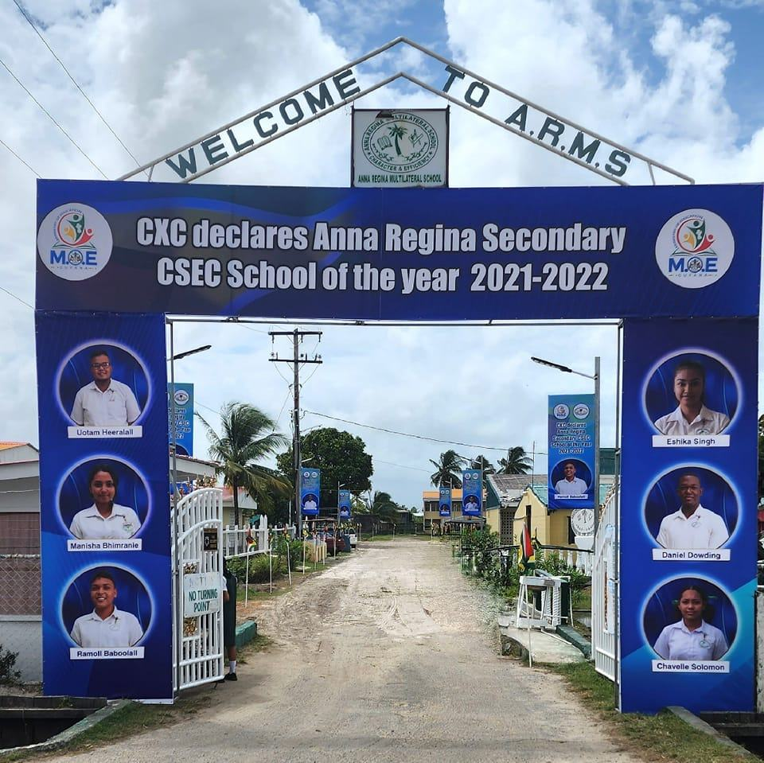
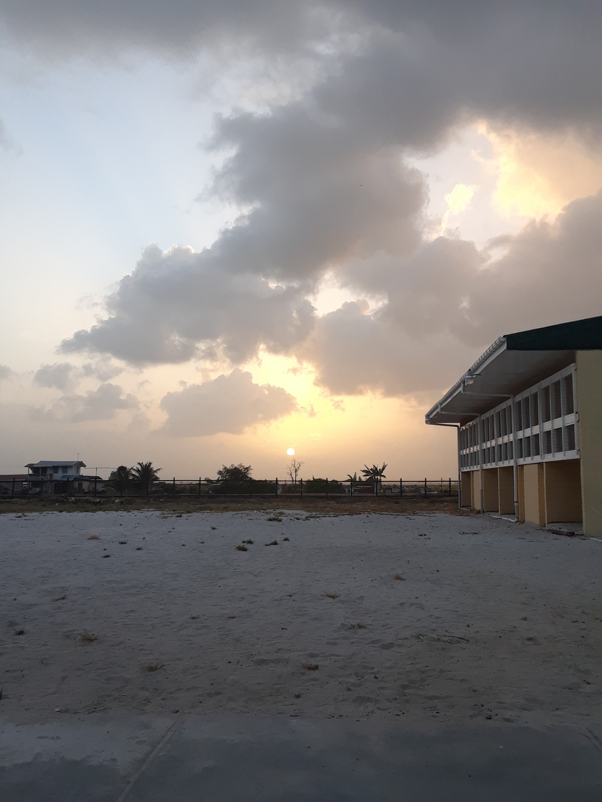

Anna Regina Government Secondary School (ARGSS) was founded through the visionary leadership of Dr. Cheddi Jagan, whose lifelong dedication to education transformed Guyana and gave generations of Essequibo Coast students a path to a better future.
A Humble Beginning
Dr. Cheddi Jagan was born on March 22, 1918, in Port Mourant, Berbice, to parents who worked as indentured sugar workers. Growing up in the hardship of plantation life, Jagan understood better than anyone the power of education as a tool of liberation. His own early years on the sugar estates shaped a conviction he would carry throughout his entire life: that every Guyanese child, regardless of background or class, deserved access to quality education.

Academic Perseverance
Despite his modest origins, Dr. Jagan pursued education with extraordinary determination. He attended local schools in Berbice before travelling to the United States for higher education, earning a Bachelor of Science degree and a Doctor of Dental Surgery (DDS) degree from Northwestern University in 1942. He returned to British Guiana in 1943, bringing with him not only professional qualifications but a renewed sense of purpose: to transform his homeland.
The Vision for Education
As a political leader and champion of working people, Dr. Jagan's policies were rooted in expanding opportunity. His government's commitment to broadening secondary education across Guyana led to the establishment of institutions like Anna Regina Secondary School, ensuring that students on the Essequibo Coast, far from the capital, had access to the same educational opportunities as students in Georgetown. He believed education was not a privilege but a right.

A Legacy That Endures
Dr. Cheddi Jagan went on to serve as Premier of British Guiana and later as President of the Co-operative Republic of Guyana. Throughout his life he remained committed to the causes of workers, equality, and education. The school he helped bring into existence, founded in 1961, has grown into one of the leading secondary institutions in Region 2 and a CXC CSEC School of the Year. His humble beginnings and academic perseverance are embodied in every student who walks through its gates.